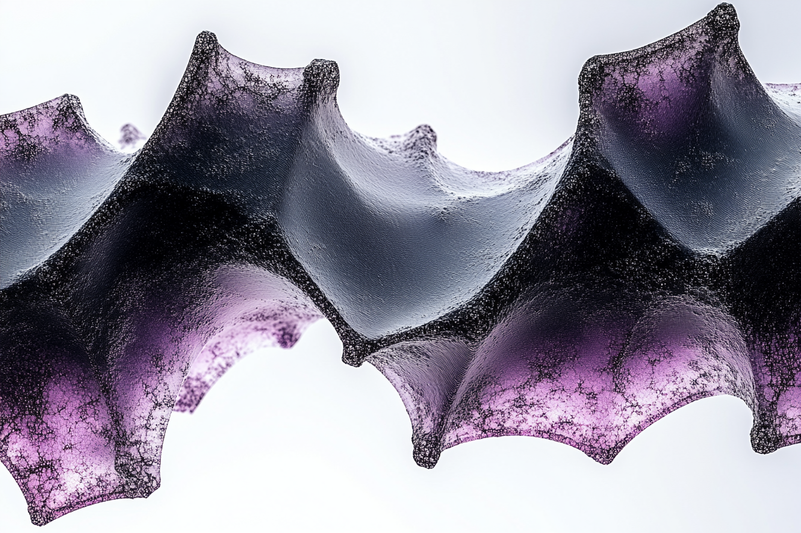

что мы предлагаем
- бесплатное обучение для представителей НКО
- практические навыки работы с современными AI-инструментами
- доступ к сообществу практиков и экспертную поддержку
- возможность масштабировать социальное влияние через технологии

практические навыки работы с современными AI-инструментами, сообщество практиков и экспертная поддержка
привет друг! Если ты здесь, то наверняка, как и мы, хочешь менять мир к лучшему.
мы в AI Mindset верим, что искусственный интеллект – это не просто модный тренд, а мощный инструмент для усиления социального влияния, личного развития и расширения творческих возможностей.
мы создаем сообщество единомышленников, которые используют AI для решения важных общественных задач.
Это не только технический навык – в первую очередь это способ мышления (mindset).
ваша организация или инициатива должна быть направлена на общественное благо.
это могут быть социальные, культурные, образовательные проекты, правозащитные инициативы, развитие науки и технологий, или другие направления, создающие позитивные изменения в обществе.
мы приветствуем как опыт, так и искренний интерес к применению AI для улучшения ваших текущих программ и внутренних процессов.
важно иметь конкретные идеи по использованию AI или уже реализованные проекты. Расскажите нам о своем видении применения AI в вашей работе.
мы ценим открытость к обмену опытом и активное участие в жизни сообщества.
вы должны быть готовы не только получать знания, но и делиться своими успехами и неудачами, помогать другим участникам в их развитии, участвовать в групповых обсуждениях и совместных проектах.
мы ожидаем активного участия в лаборатории.
курс нельзя «посмотреть в записи», хотя записи будут. Необходимо регулярно присутствовать на живых занятиях, выполнять практические задания и применять полученные инструменты к своему проекту – это ваша плата за участие в программе.
технологии меняются, а способ мышления остаётся
каждая неделя это эксперимент с реальными задачами
вы учитесь не только у экспертов, но и друг у друга
углубляйтесь в то, что резонирует именно с вами
просто напиши нам и расскажи о своем проекте и о том, как планируешь применять AI.
мест немного, но мы всегда ищем возможности помочь тем, кто действительно хочет менять мир к лучшему. Не стесняйся подавать заявку, мы найдем как тебе помочь.
Для бизнеса — обучение команд →